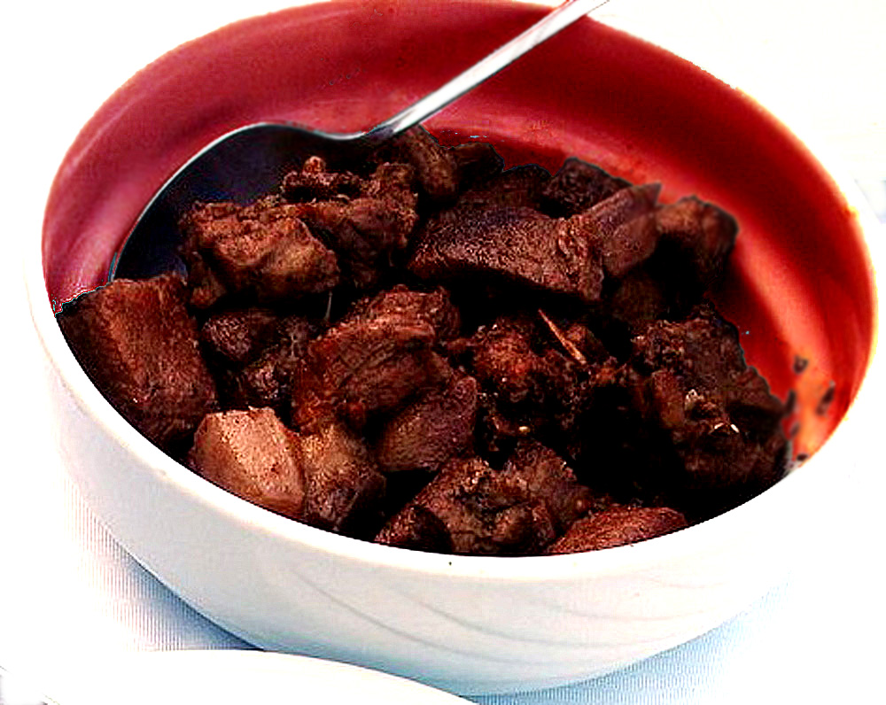

Afelia
Home

Description
Afelia is a traditional Cypriot pork dish. It is pork marinated and cooked in red wine with coarsely
crushed coriander seed. In order to prepare the dish, ingredients like salt, pepper, oil etc. are included.
During the British era (from 1878) the use of butter instead of oil was noted.
Afelia is usually served with potato dish, bulgur and yogurt.
Ingredients
- 1 kilo (2.20 lbs) of boneless pork meat from the neck or shoulder, cut in small pieces
- ⅓ cup olive oil for frying
- 2 cups red dry wine
- 2 tablespoon coriander seeds, crushed
- Freshly ground black pepper
- 2 bay leaves
- ½ teaspoon of artishia (cumin)
- ½ cup water
- 1 tablespoon salt
- 300 grams (10.5 oz) button mushrooms, sliced (optional)
- 1 tablespoon olive oil
Steps
- Marinate the meat with the wine, pepper, coriander, cumin and bay leaves and leave them overnight or
at least three hours before cooking. Drain and reserve the marinade.
- Heat the olive oil in a sautéing pan and sauté the meat on both sides. Add the marinade, mix for
a few minutes and add the water a well as the salt. Discard the bay leaves ten minutes after cooking.
- Cover sautéing pan with lid. Bring to a boil and then lower heat and simmer for
about 1 hour 15 minutes or until the meat is tender, adding more water, if necessary.
- In the meantime in a non-stick frying pan heat the 1 tablespoon olive oil and sauté the
mushrooms for 3 - 4 minutes, season with salt and pepper and set aside.
- When the meat is cooked, mix in the mushrooms and cook for 2 more minutes.